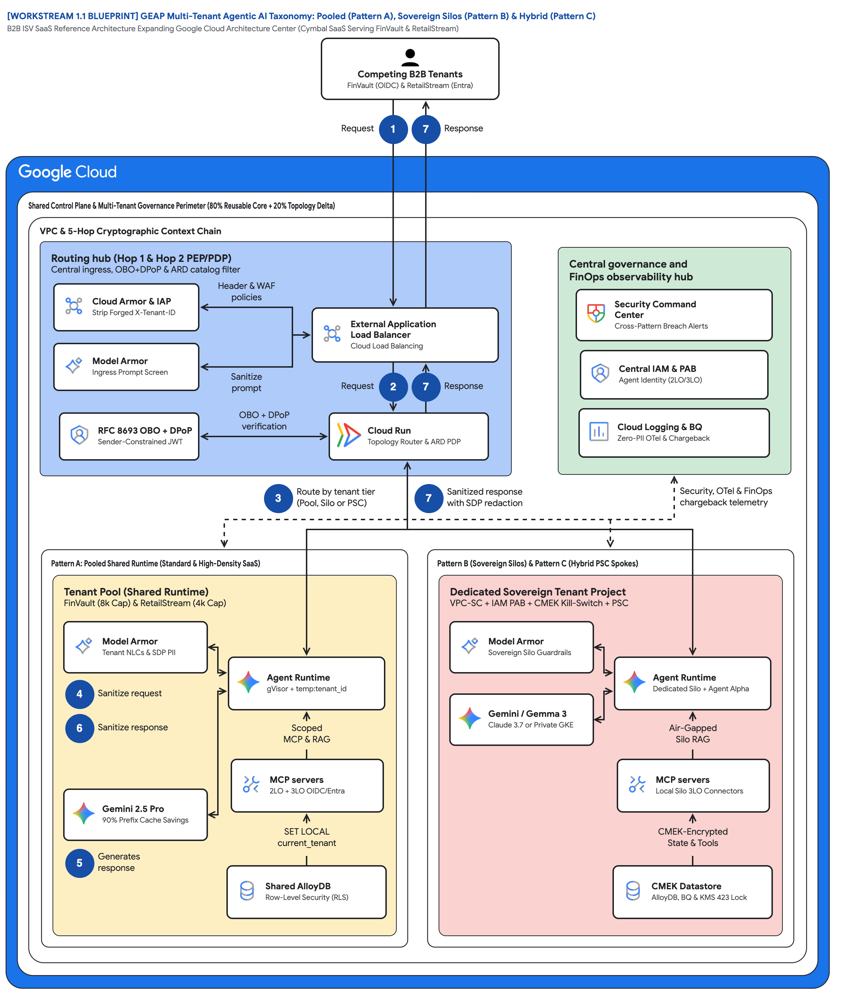

Shared runtime with logical & cryptographic isolation.
ContextCacheConfig (up to 90% COGS savings)Dedicated GCP project per corporate tenant.
Unified routing across mixed Pooled & Sovereign tiers.
| Governance Pillar | Tenant Alpha: FinVault Bank (Enterprise) | Tenant Beta: RetailStream Corp (Standard) | GEAP Governance Enforcement |
|---|---|---|---|
| 1. Catalog & Agent Visibility (Hop 2) | ✅ Shared Diagnostic Agent ✅ Private Agent Alpha (Full CRUD & API Owner) |
✅ Shared Diagnostic Agent ❌ Agent Alpha Hidden (403 Forbidden) |
GEAP Agent Registry (PDP) tenant labels + ARD catalog filtering + ADK before_agent_callback tool pruning |
| 2. Identity & Tool Auth (Hop 1 & 5) | • 2LO Implicit: Cymbal Telemetry API • 3LO Google OIDC: Drive, Calendar, Gmail, Jira |
• 2LO Implicit: Cymbal Telemetry API • 3LO Entra ID: SharePoint & ServiceNow (Inline OAuth) |
Cloud Armor/IAP (strips forged X-Tenant-ID) → RFC 8693 OBO + DPoP → GCP Agent Identity (Auth Manager) |
| 3. Model, Memory & FinOps (Hop 3) | • Gemini 2.5 Pro (8,000 Thinking Tokens) • Claude 3.7 Sonnet ( Agent Alpha, hot-swappable)• Memory: finvault:user:session + CMEK |
• Gemini 2.5 Pro/Flash (4,000 Thinking Cap) • Shared Prompt Prefix Cache (90% COGS savings) • Memory: retailstream:user:session |
GEAP Agent Runtime (gVisor Sandbox) + immutable temp:tenant_id + 5-Level Memory Bank + Redis Token Bulkheads |
| 4. Guardrails, Data & Audit (Hop 4 & 5) | • Redacts bank account / IBAN / SWIFT PII • Enforces OCC/FDIC NLCs & FinVault DB rows |
• Redacts customer payment card PAN PII • Scopes queries strictly to RetailStream DB rows |
Vertex AI Model Armor (Ingress prompt screen & Egress SDP DLP) + Semantic NLCs + AlloyDB RLS + BigQuery OTel |

Select any deliverable category below to read the formatted publication, copy clean Markdown for Google Cloud Blog / Medium / Dev.to / LinkedIn, or print to PDF:
Click any preset scenario or full test suite below to execute the Python 5-Hop runtime via POST /api/simulate/scenario:
POST /api/runtime/invoke)Click any preset button or "Execute Live 5-Hop Turn" above to run the real Python 5-Hop Cryptographic Pipeline...
| Workstream | Timeline & Milestone | Interactive Deliverable Files (Click to Inspect) |
|---|---|---|
| Core Cymbal Engine (80% Shared) | Foundational | core-cymbal-agent/models.py core-cymbal-agent/runtime_pipeline.py hop1_edge_identity_pep.py hop2_registry_pdp_callbacks.py hop3_compute_finops_bulkhead.py hop4_model_armor_guardrails.py hop5_data_rls_and_otel.py shared_diagnostic_agent.py finvault_agent_alpha.py cymbal_mcp_hub.py |
| Workstream 1: Reference Architectures | Weeks 1–2 | 1.1-architecture-taxonomy-and-diagrams.md 1.2-product-team-review-pack.md 1.3-cloud-architecture-center-doc-update-pr.md 1.4-eap-and-product-gap-tracker.md diagrams/ws1-taxonomy.drawio.xml diagrams/ws1-5hop.drawio.xml |
| Workstream 2: Pooled Architecture (Pattern A) | Weeks 1–4 • Milestone 1 | 2.1-case-study.md 2.2-3p-auth-sandbox.md 2.3/pattern_a_pooled_service.py 2.3/pooled_gateway_and_rls.sql 2.4-product-gaps.md 2.5/run_breach_simulations.py 2.6/main.tf 2.7-blog-pooled.md 2.8/codelab-90min.md 2.8/workshop-deck.md 2.9-video-script.md diagrams/ws2-pooled.drawio.xml diagrams/ws2-breach.drawio.xml |
| Workstream 3: Sovereign Silos (Pattern B) | Weeks 4–7 • Milestone 2 | 3.1-silo-architecture.md 3.2-cmek-setup.md 3.3/pattern_b_siloed_service.py 3.3/gke_gemma3_airgapped.yaml 3.4-vpc-sc-signoff.md 3.5/run_silo_security_tests.py 3.6/main.tf 3.7-blog-siloed.md 3.8/codelab-90min.md 3.8/workshop-deck.md 3.9-video-script.md diagrams/ws3-siloed.drawio.xml |
| Workstream 4: Dynamic Hybrid (Pattern C) | Weeks 7–10 • Milestone 3 | 4.1-hybrid-psc.md 4.2-hub-and-spoke-setup.md 4.3/pattern_c_hybrid_router_and_migrator.py 4.4-psc-and-registry.md 4.5/run_tier_migration_suite.py 4.6/main.tf 4.7-blog-hybrid.md 4.8/codelab-90min.md 4.8/workshop-deck.md 4.9-video-script.md diagrams/ws4-hybrid.drawio.xml |
| Workstream 5: Wrap-Up & Backlog Capstone | Week 10 Wrap-Up | 5.1-pattern-comparison-and-decision-guide.md 5.2-blog-multi-tenant-agentic-triad.md diagrams/ws5-triad.drawio.xml |
Select a deliverable file pill above to inspect its full Markdown, Python, SQL, YAML, or Terraform source...
scripts/run_deep_forensic_audit.py)Verifies all markdown links, UI artifact pills, publish-ready frontmatter, 7 modular agent/MCP files, 7 Architecture Center blueprints, 5-Hop cryptographic controls, Terraform blueprints, and 20/20 simulations.
| Audit ID | Forensic Audit Domain | Live Verification Detail | Status |
|---|---|---|---|
F-01 | Zero Broken Links & Modular File Parity | Verified all file links across 36 markdown files (0 broken) and 7 modular agent/MCP files. | PASS |
F-02 | Slide 7 Dynamic Firestore/Memorystore Config & GCS Skills | Loaded FinVault system_prompt_template and 2 GCS Skills URIs (gs://cymbal-skills-finvault/...). | PASS |
F-03 | Slide 7 Private Agent Alpha REST/CLI Provisioning & Model Hot-Swap | Implemented provision_via_agents_cli() and hot_swap_model() on Vertex AI Model Garden with tenant ownership guard. | PASS |
F-04 | Slide 7 Complete 2LO & 3LO MCP Tool Dispatchers | Verified 2LO Telemetry, 3LO Google Workspace (Drive/Calendar/Gmail) & Jira, and 3LO Entra ID (SharePoint/ServiceNow) MCP servers. | PASS |
F-05 | Slide 8 Hop 2 ARD Catalog Filtering | Implemented filter_ard_catalog() alongside GEAP Registry PDP labels and ADK before_agent_callback pruning. | PASS |
F-06 | Slide 8 Hop 3 5-Level Memory Bank Isolation | Implemented L1_TURN_EPHEMERAL..L5_PLATFORM_SHARED_SKILLS read/write enforcement blocking cross-tenant namespace reads. | PASS |
F-07 | Slide 8 Hop 4 Active Semantic NLC Enforcement | Implemented evaluate_semantic_nlcs() blocking regulatory/compliance NLC violations with HTTP 422. | PASS |
F-08 | Slide 11 Pattern B Dual-Tenant Sovereign Silos | Verified sovereign silos & CMEK kill-switches for both FinVault Bank and RetailStream Corp. | PASS |
F-09 | Zero Global State Mutation Across Test Suites | Isolated self.tenant_profiles per runtime instance so Pattern C live tier upgrades never mutate global state. | PASS |
F-10 | Complete Terraform Starter & Blueprint Documentation | Verified main.tf, variables.tf, README.md, and terraform.tfvars.example across Workstreams 2.6, 3.6, and 4.6. | PASS |
F-11 | Sanitized Repository Hygiene & .gitignore | Added .gitignore and verified 0 __pycache__/*.pyc artifacts. | PASS |
F-12 | Interactive HTML5 Architecture, Publish Studio, 7-Blueprint Gallery & Simulator Portal | Verified self-contained interactive portal at index.html with 100% valid artifact, diagram & publication paths. | PASS |